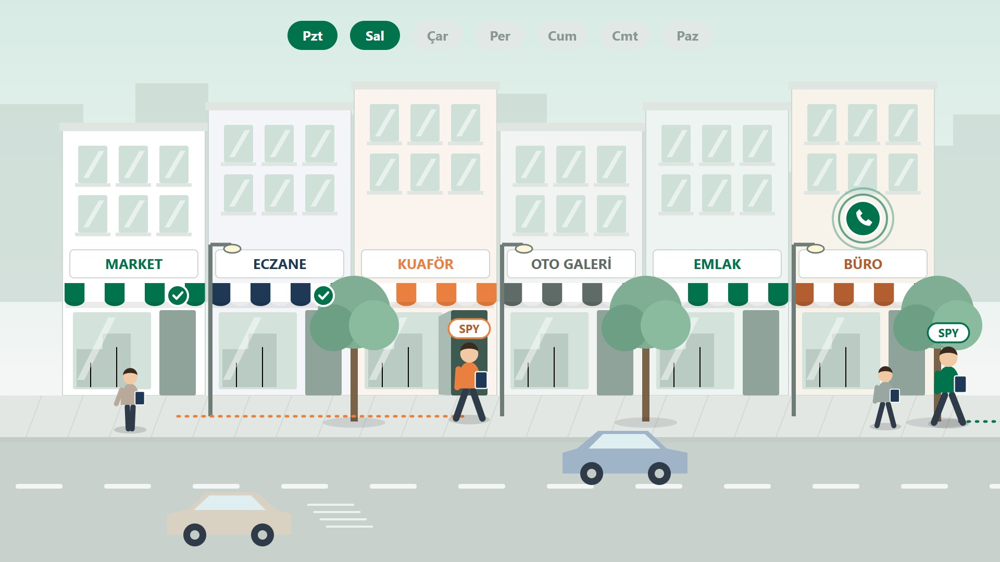
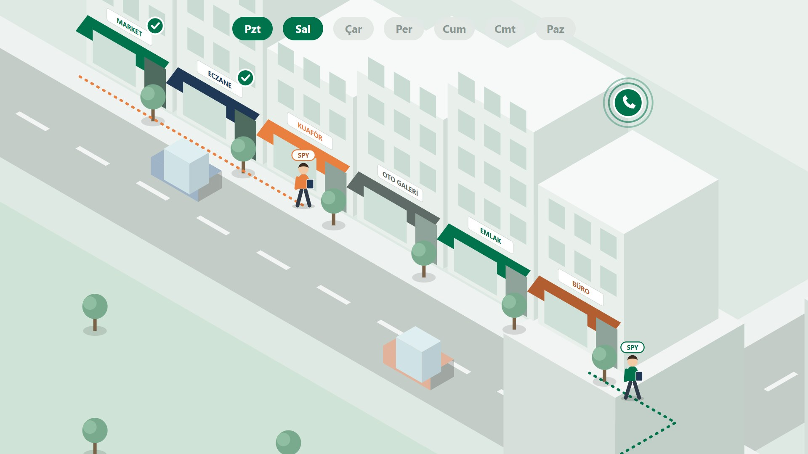
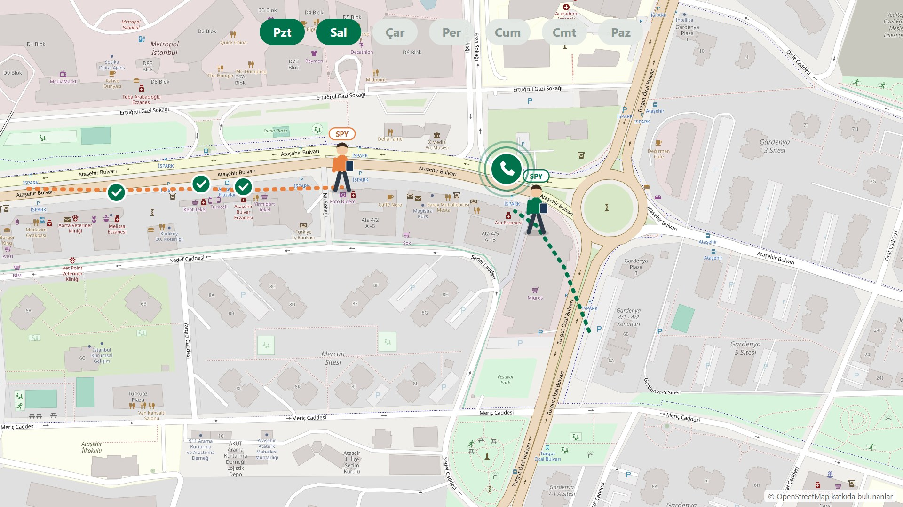
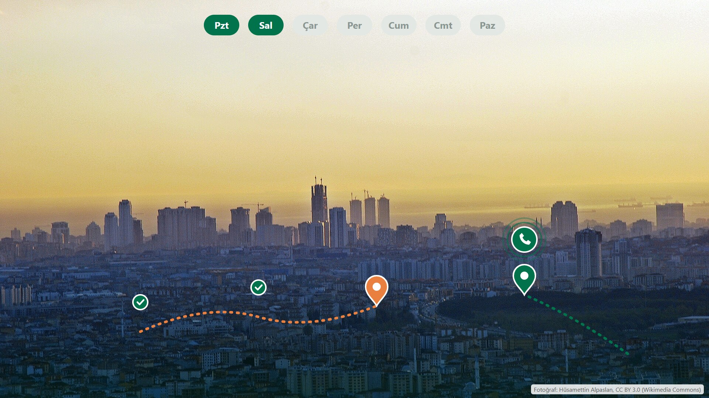

Sokak sahnesi · 4 seçenek
Her kare aynı anı gösteriyor: turuncu SPY kapı kapı geziyor, yeşil SPY çağrı gelen işyerine gidiyor, üstte çağrı günleri. Kareler animasyonsuz taslaktır; seçilen yön videoda hareketli ve daha özenli çizilir.

A · Zenginleştirilmiş yan görünüm
Mevcut sokak; derinlik (arka binalar), ağaç, sokak lambası, araçlar, yayalar, pencere yansımaları eklenir. SPY'ler gerçekten yürür, kapı açılır, kamera SPY'yi takip eder.
Artı: mevcut kurguya en yakın, en az iş. Eksi: rota ve iki SPY'nin ilişkisi yan görünümde sınırlı görünür.
B · İzometrik mahalle (önerim)
Yukarıdan, üç boyutlu görünümlü mahalle bloğu. Kapı kapı rota ve çağrıya giden rota aynı karede çizgilerle görünür; kamera yavaşça kayar ve yakınlaşır, araçlar hareket eder.
Artı: en kurumsal görünüm, iki çalışma biçimini aynı anda en net anlatan seçenek. Eksi: en çok iş; bu kare kaba bir taslak.
C · Gerçek harita (Ataşehir Bulvarı)
Ataşehir'de gerçek bir caddenin yakın haritası; SPY'ler gerçek dükkânların önünden geçer.
Artı: gerçekçi, yer duygusu güçlü. Eksi: haritada gerçek işletme adları görünüyor; yol haritası bölümündeki haritayla görsel tekrar olur; karakterler küçük kalır.
D · Gerçek fotoğraf / görüntü + grafik
Gerçek bir Ataşehir görüntüsünün üstüne marka renklerinde rota, işaret ve gün şeridi.
Artı: en gerçekçi. Eksi: uygun sokak görüntüsü bulmak zor (ücretsiz lisanslı İstanbul sokak çekimi az; kişilerin yüzleri ve markalar sorun olabilir), lisans için fotoğrafçı adı yazılmalı. Fotoğraf: Hüsamettin Alpaslan, CC BY 3.0, Wikimedia Commons.